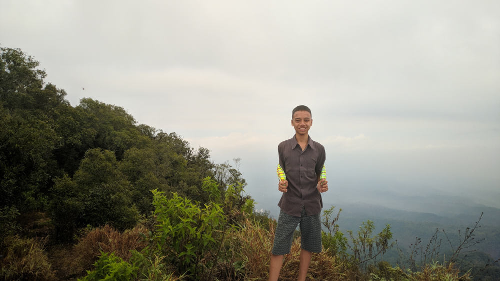
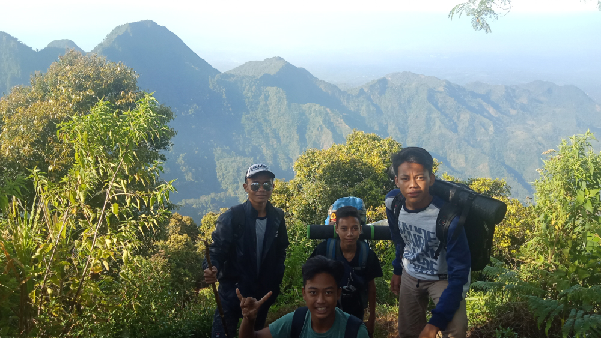
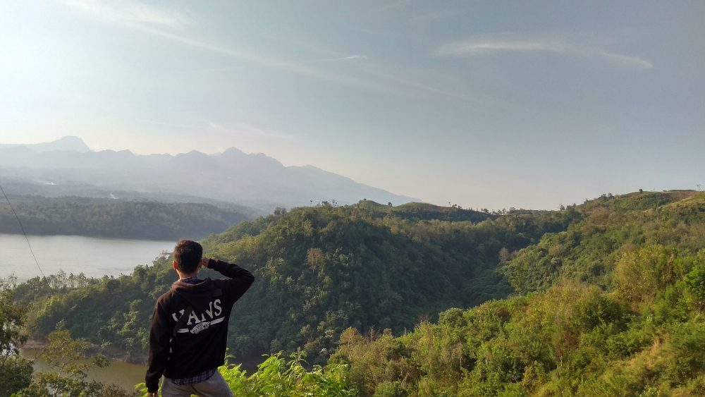
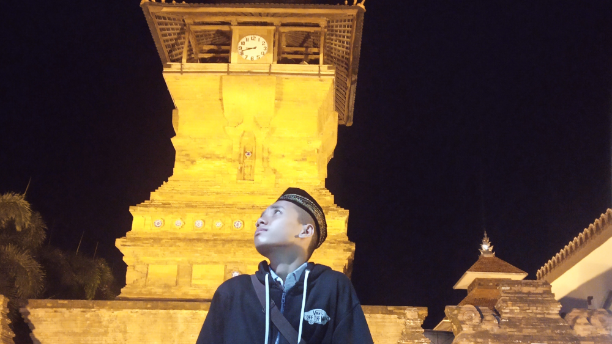

1. Natas Angin

Puncak Natas Angin adalah salah satu dari tujuh puncak Gunung Muria yang dikenal sebagai 7 Summits of Muria. Dari ke tujuh puncak tersebut, Puncak Natas Angin menjadi salah satu dari empat jalur pendakian utama di Gunung Muria.
Puncak Natas Angin masuk dalam kawasan Kabupaten Kudus, Jawa Tengah dengan ketinggian 1.602 meter di atas permukaan laut (mdpl). Meskipun ketinggiannya tidak seperti puncak gunung yang mencapai 3000an mdpl, namun keindahan puncak Natas Angin ini tidak bisa disangkal.
2. Puncak 29

Puncak 29 berlokasi di desa rahwatu, kecamatan gebog, kabupaten kudus, provinsi jawa tengah, negara indonesia.
Untuk anda yang suka akan pendakian jangan lewatkan puncak yang satu ini karena puncak songolikur (puncak 29) adalah pusat wisata alam yangn memiliki keindahan alam yang sempurna. contohnya dari jalur pendakiannya yang seru dengan dikelilingi banyak pepohonan dan sungai yang turun langsung dari puncak gunung tersebut disanapun banyak pos-pos pendakian yang memberikan pelayanan yang terbaik anda bisa sambil beristirahat dan minum kopi hangat dan jika anda kelehan anda bisa beristirahat atau bermalam sembari menunggu besok untuk melanjuttkan perjalannan lagi.
3. Puser Angin

Bukit Puser Angin, terletak di Desa Klaling, Kecamatan Jekulo, Kabupaten Kudus memanjakan para pengunjung dengan keindahan pemandangan bendungan Logung dari atas bukit yang banyak orang menyamakan bukit itu seperti keindahan Raja Ampat di Papua Barat.
Warga sekitar dan pengunjung menamai Bukit Puser Angin seperti Raja Ampat yang ada di Papua Barat. Sebab dari atas bukit bisa melihat sejumlah bukit yang dikelilingi air merupakan Bendungan Logung Kudus.
4. Menara

Menara adalah salah satu wisata religi yang ada pada kudus. Menara yang sering disebut Masjid Al Aqsa dan Masjid Al Manar ini dibangun oleh Sunan Kudus sekitar tahun 1549 Masehi. Terletak di Desa Kauman, Kecamatan Kota, Kudus, Jawa Tengah, menara ini memiliki bentuk yang unik.
Selain berziarah, pengunjung juga bisa menikmati kuliner khas Kota Kretek seperti soto Kudus yang banyak dijual di sekitar menara. Bagi pengunjung yang suka berburu oleh-oleh, di sebelah kanan-kiri menara terdapat warung-warung yang menjual makanan khas Kudus seperti jenang dan intip, makanan sejenis rengginang khas Kudus.